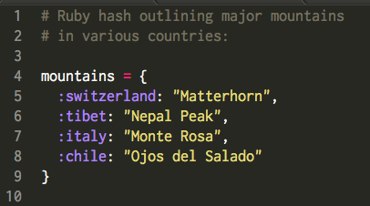
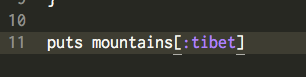
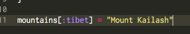
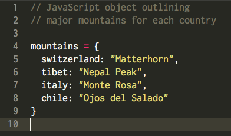
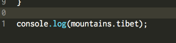
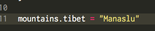
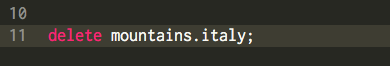
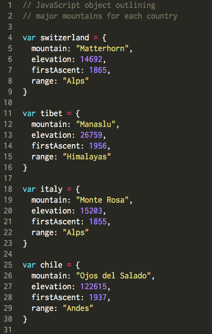

back to index
JavaScript Objects vs. Ruby Hashes
go climb a rock

Lisa Buch
view my portfolio
recent posts
- ruby classes
- css-positioning
- map method
recent posts
When it comes to collections of information and data, Ruby and JavaScript each have their own ways of storing, organizing, and handling this information. Ruby features the use of hashes, which store information in key:value pairs, whereas JavaScript makes use of objects contain properties of the object. Logically, Ruby hashes and JavaScript objects are similar, but differ in their syntax and how we handle the information contained by each. To illustrate their differences, let's look at some code.
This is an example of a simple hash in Ruby. As you can see, each country is a key (represented by a Ruby symbol), and its value is a string representing a prominent mountain in that country.
If I wanted to simply print out the mountain listed for Tibet, for example, I would write:
If I wanted to list a different mountain, and change my value for :tibet, I would write:
To add a new country/mountain pair to my hash, I would write:

And, to delete a country/mountain pair, all I would need to write is:

(sorry, Italy!)
Pretty simple! A JavaScript object would list the same information the following way:
Note that JavaScript objects cannot contain symbols, as Ruby hashes do. Also, objects should be declared as variables, and should include the var keyword in front of their name. To print out the mountain listed for Tibet this time, I would write:
Note the dot notation instad of the square brackets, as were used to access information in a Ruby hash. To update my listing for Tibet, and to list a different mountain, I would write:
Again, an approach that's similar to Ruby's, but properties are accessed via the dot notation, instead of square brackets. To delete a property from my object, I would write:
Again, sorry, Italy! JavaScript objects allow for a bit more of an elaborate collection of information, which is exciting. If I wanted to list not only a mountain for a given country, but wanted to include information about its elevation, what range it belongs to, and when the first ascent was, a JavaScript object would be a great way to do this! Since I'm going to be listing multiple properties for a single mountain, I may want to separate my countries into separate objects. Here's what the resulting objects may look like:
Then, I could access and modify any given property for a mountain using the same methods outlined above. If some freak geographic event occurred, and Manaslu gained an extra 1,000 feet in elevation, I could change that property by writing:
Pretty cool! Now, go out and climb a rock!